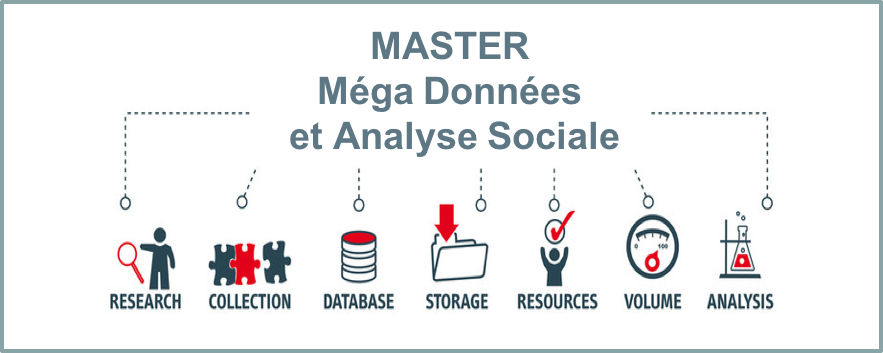

Disclaimer
Nous c'est les
MéDAS, on fait de la data analyse en contexte social : voici le lien le site
 .
.

Nous c'est les
MéDAS, on fait de la data analyse en contexte social : voici le lien le site
.
| Prof | Matière enseignée |
|---|---|
| Karim KILANI | Fouille |
| Gérald KEMBELLEC | Base de données |
| Josselin NOIREL | Algo et Python |